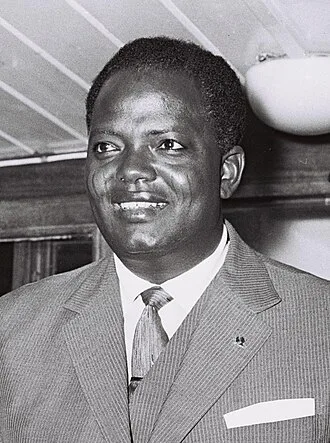

Place Hubert Maga
En mémoire du père de l'indépendance et premier Président du Bénin.
Le Monument & La Place
Cette place est un monument majestueux érigé en mémoire de Hubert Koutoukou MAGA, premier Président de la République du Bénin et père de l’indépendance. Récemment aménagée suite aux ambitieux travaux d’urbanisation de la ville par le gouvernement, la Place Hubert K. MAGA accueille chaque soir une foule de jeunes de divers horizons venus se détendre et se réunir autour du monument de l'illustre homme d'État nordiste.
Parcours d'Hubert Maga

Hubert Maga, né le 10 août 1916 à Parakou et mort le 8 mai 2000 à Cotonou, est un instituteur, homme politique béninois et président de la république du Dahomey (actuel Bénin) de 1960 à 1963 et de 1970 à 1972.
Jeunesse & Formation
Issu d'une famille modeste, Koutoukou Maga suit des études primaires, à partir de 1926, à Bohicon et à Abomey. Il intègre alors l'École primaire supérieure Victor-Ballot à Porto-Novo, avant d'entrer à l'École normale William-Ponty en 1933. Hubert Maga sort major de la promotion dahoméenne et devient le troisième instituteur dahoméen originaire du Nord. Il dirige notamment l'école primaire de Natitingou à partir de 1945. Durant ses années d'étudiant, il tisse de solides liens d'amitié avec d'autres futures figures de proue ouest-africaines telles qu'Hamani Diori (Niger) et Modibo Keïta (Mali).
L'Entrée dans la vie politique
Lors des élections territoriales de 1946-1947, Hubert Maga se présente avec succès dans la circonscription de Kandi et Natitingou. En novembre 1947, il est élu au Grand conseil de l'AOF, accédant ainsi à des responsabilités politiques qui en font progressivement l'une des personnalités clés du paysage dahoméen.
Le Groupement Ethnique du Nord (GEN)
Afin de mieux défendre les intérêts des populations de sa région, il fonde en 1951 un nouveau mouvement : le Groupement ethnique du Nord, qui s'avère redoutablement efficace. Élu député la même année au palais Bourbon à Paris, il accède à la plus prestigieuse fonction élective à l'époque. En 1953, pour élargir son assise, son mouvement est rebaptisé Mouvement démocratique dahoméen (MDD), puis fusionne avec d'autres formations en 1957 pour devenir le Rassemblement démocratique dahoméen (RDD).
Vers l'Indépendance
En novembre 1957, Hubert Maga franchit un pallier symbolique en devenant sous-secrétaire d'État dans le gouvernement français. Considéré par tous comme un arbitre incontournable au sein des divisions Sud-Nord, il est investi Premier ministre le 22 mai 1959. C'est à ce poste qu'il mène fièrement le pays vers la souveraine liberté, décrétant l'indépendance complète du Dahomey le 1er août 1960 et devenant plus tard la même année le premier Président constitutionnellement élu de la jeune nation.